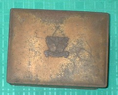
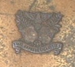
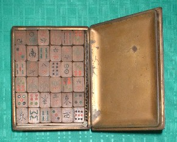
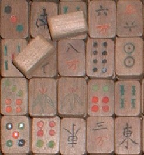
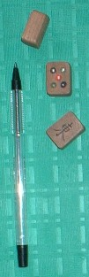

一口に木製牌といっても、内容はさまざま。たとえばNo．32「タイ製木製牌」は、現代タイ国のみやげもの。タイ国麻雀風土を物語るそれなりの資料ではあるが、過去の歴史を物語ることもなければ骨董的価値もない。
No．30「戦後木製牌」は、日本麻雀の歴史を物語る貴重な資料であるが、販売用の商業製品。やはり骨董的価値は薄い。それに比べるとNo．11の「枕木牌」は、日本兵が虜囚生活の中で制作したもので、歴史的資料として群を抜いている。また完成度からいって、骨董的価値も高い。
今回紹介する、この戦後木製手作り牌は、昭和25年頃に製造されたもの。金属製の箱に入っているが、この箱はアメリカタバコの入れ物。

蓋(ふた)の表面に、なにやら紋章らしきものがある。よく見ると、上部は鷲が羽を広げている。鷲といえばアメリカの象徴。

最下部にはSTATE EXPRESS CIGARETESという英文が刻んである。意味はよく分からないが、特別タバコというところか。牌を制作したあと、周りにあったこれを収納箱としただけだろうけれど、これも歴史を語る一断面。その意味で、立派な伴箱である。

材質は、彫刻しやすい朴の木。もちろん１牌１牌、手彫り。

大きさもタテ２センチ、ヨコ１．５センチ、厚み１センチと小ぶり。

商品として製造されたもなのか、個人が麻雀やりたさの一心で制作したものか、ちと不明。しかし入れ物がタバコ入れだったり、牌の大きさが不揃いなので、どうみても素人制作。しかし木材のカット面はなめらかで、とても素人がナイフやのこぎり片手にゴリゴリというレベルではない。彫りも職人はだし。
そこでこれは商品ではなく、あくまで個人制作品。しかしまったくの素人ではなく、指物師とか彫刻師など、その道の職人の手による手作り牌と思われる。
材質が朴の木なので、その持ち味が。また骨董的価値も枕木牌には及ばない。しかし第２次大戦後の日本麻雀事情の一断面を語る歴史的資料としての価値は枕木牌に劣らない。
|